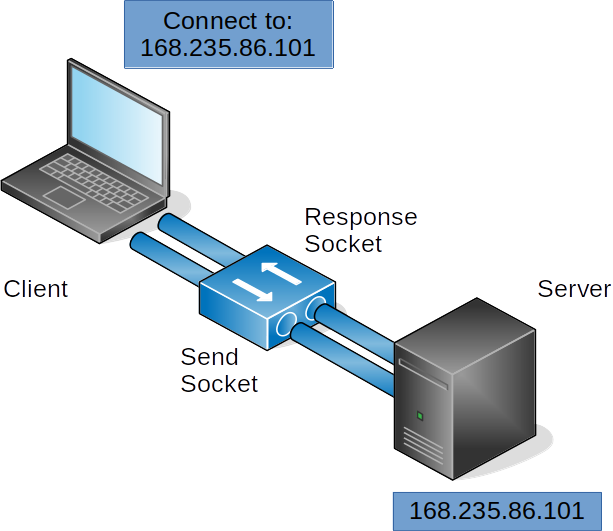
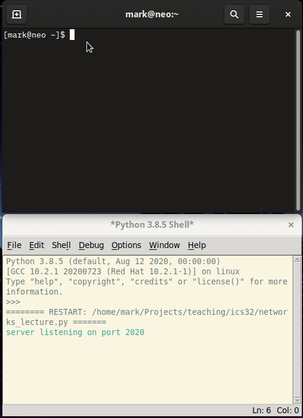

Week 4 Notes¶
Note
Keep an eye weekly pages as they might be updated throughout the week.
Week 4 Overview¶
It’s week 4. You should be wrapping with Part 1 of assignment 2 right about now and getting ready to start Part 2. The lectures for this week will help you accomplish that goal.
- Quick Links:
Lecture Materials¶
- Lectures for Week 3
Networks and Sockets¶
In a1 and a2, you are tasked with storing and retrieving data from the file system by opening, reading or writing, and closing a file using Python’s built-in functions for file management. open(), close(), read(), and write(), as examples, allow us to open a stream to a file to send and receive data to a file located in our computer’s file system
But what if we wanted to send and receive data to a different computer? We could continue to use the file system to store the data and then find a way to transfer the file over a network connection. Or, we could create a direct connection to a networked computer and stream the data directly. Since we are not going to concern ourselves with the transfer of files just yet, let’s look at how we can use Python’s networking interface to send data to another computer.
In Python, we can think of a networking interface as any tool that facilitates communication with another computer over an ethernet connection. In the following diagram, a network connection has been established between two computers. Although the diagram does not specify, we can assume that the client (laptop) and server (box) are both connected to a common network (e.g., a corporate lan, wan, or the Internet). In order to communicate with each other, the server exposes a unique IP address (168.235.86.101, as depicted here for example) and the client must know of that IP address.

When the client is ready to connect, it first checks to see if the server’s address is available for connections. If available, the server sends a response to confirm and then waits for data to be sent from the client. Communication is performed using a socket, which in Python, is a wrapper on many of the underlying details that computers must establish to stream data. For the purposes of this lecture, we will focus on a fairly narrow set of the many ways that sockets can be used. So our primary concern here is how sockets send and receive data. Notice in the diagram above, that each computing system has two sockets: a response socket and a send socket, which represent the input stream of data from a remote computer and the output stream of data that is sent from the local computer. When data is streamed to the socket, Python’s socket library attempts to ensure that all data is sent or received arrives intact and in the order it was written.
The following diagram illustrates the primary Python functions required to establish a socket between two computers. Notice how the send() and recv() functions at the end are iterative. In this example, after a response is sent, the server waits until the client sends data again, establish a send and receive loop until either the client disconnects or the server rejects the connection.

So now let’s take a look at how the code for these two computer systems could be written using Python’s socket library.
import socket
PORT = 2020
HOST = "127.0.0.1"
with socket.socket(socket.AF_INET, socket.SOCK_STREAM) as srv:
srv.bind((HOST, PORT))
srv.listen()
print("server listening on port", PORT)
connection, address = srv.accept()
with connection:
print("client connected")
while True:
rec_msg = connection.recv(4096)
print("echo", rec_msg)
if not rec_msg:
break
connection.sendall(rec_msg)
print("client disconnected")
In the code above, we start by importing the socket module to the program, and set a PORT and HOST variable that contain the IP address of the server and the desired port (port numbers are unrestricted, however, there are some common conventions for ports where you might find conflicts, so choose wisely).
Then, a with statement is used to instantiate a socket object and assign it to the variable srv. with will handle the responsibility of properly closing the socket and connection. The socket is first bound to the desired address and port, then set to listen for incoming socket connection requests. The code, as is, will block at this point until a it hears a remote connection, at which point the socket will accept the connection and store the socket connection and remote address in the variables connection and address respectively.
Now that a connection between a remote computer and server is established, the program can begin to exchange data. The server depicted by the code here is a lightweight echo server whose only responsibility is to send the data it receives as a response. Because Python sockets use the same underlying tools for establishing network connections as other programming languages and networking tools, we can connect to this server in a number of different ways. If you are on Windows, you can download a program called “PUTTY” to connect to this server and send it messages. If you are on Linux or OSX, you should have a preinstalled tool called ncat that will allow you to connect. In the following example, I use ncat to connect to the server and send a few messages.

Take a minute and try it for yourself. Grab PUTTY or fire up ncat, copy the server code sample into IDLE, and send some messages!
Oh, one more thing before we move on. In networking, there are some IP addresses that have special meaning. One of those address that will be relevant to you here is the loopback address:

The loopback address, 127.0.0.1 is networking convention that allows a computer to connect to itself using its network connection. And just like domain names on the Internet, the ‘name’ localhost is an alphanumeric map to the loopback IP address. In the example above, I bind the Python server to the loopback address and connect to it using ncat. This provides a simple and straightforward way to test our socket programming without having to maintain code on two separate systems.
Okay, so we have seen how we can connect to the Python server with an existing client, now let’s take a look at how we can write our own.
import socket
PORT = 2020
HOST = "127.0.0.1"
with socket.socket(socket.AF_INET, socket.SOCK_STREAM) as client:
client.connect((HOST, PORT))
print("client connected to {HOST} on {PORT}")
while True:
msg = input("Enter message to send: ")
client.sendall(msg.encode('utf-8'))
srv_msg = client.recv(4096)
print("Response",srv_msg.decode('utf-8'))
So in the client example, just like the server code, we first instantiate a socket object and assign it to a variable, in this case we will use client for differentiation. However, rather than bind() and listen() on an address and port, we tell the socket to connect() to the location that we expect to be listening. Then we simply create a while loop to continuously collect user input, send it using the connected socket, and print the response from the server.
Go ahead, take a minute to copy the client code into a new instance of IDLE. You should be to run both the server and client at the same time. Just make sure that you start the server first so the client can connect.
One final concern that we have not discussed yet is the format in which we are sending and receiving data. You have probably noticed that prior to the client sending the user input string, it is encoded. The encode() function converts the its string object to bytes in the format that is passed as a parameter (utf-8) in our example. Likewise, the response from the server is decoded again before printing to the shell. This process can become quite burdensome when a program needs to send and receive larger, complex data sets. Fortunately, Python makes this process much easier for us by exposing some additional functions that abstract much of the work for us. Let’s take a look at the revised code first:
import socket
PORT = 2020
HOST = "127.0.0.1"
with socket.socket(socket.AF_INET, socket.SOCK_STREAM) as client:
client.connect((HOST, PORT))
send = client.makefile('w')
recv = client.makefile('r')
print("client connected to {HOST} on {PORT}")
while True:
msg = input("Enter message to send: ")
send.write(msg + '\r\n')
send.flush()
srv_msg = recv.readline()
print("Response",srv_msg)
Here we make use of the socket module’s makefile function to create a read and write convention that more closely resembles what we have learned from file operations. Makefile abstracts much of the work required to convert string-like data into bytes. Notice, we no longer have to conduct any encoding or decoding operations. Rather, we simply create readable (.makefile('r')) and writeable (.makefile('w')) file objects on our connected socket. The only additional responsibility required here is to tell the remote connection when we have completed writing operations. Write operations will typically store data in a buffer prior to sending, often, buffered data will not be sent until the buffer is full. Therefore, it is always important to remember flush the buffer when write operations have completed. The socket’s .flush() function will conduct this operation for you.
Videos¶
Notes¶
Protocols¶
In assignment 2, you are provided with the Profile module for storing and loading user data. In this module, we make use of a particular format for storing information called JSON, which wraps Profile object data in a particular style of notation using the rules and conventions set forth by the creators of the format. All the files that you find on your computer adhere to a similar process: a format is created that specifies how data should be stored and retrieved and programs that make use of the format adhere to the format conventions. A file’s format is typically specified by it’s extension, or suffix (e.g., .jpg, .doc, .py), providing the program that wants to use it with some clue as to how to interpret the file contents. A good example of this is an image editing program that can display different image formats.
Programs that talk to each other over networks follow the same process. A format is agreed upon and the programs that want to talk to each other must follow this format to successfully communicate. In networking, this format is called a protocol. The Hypertext Transfer Protocol or HTTP, for example, is one way that servers and the clients that connect to them can communicate (if you are reading this web page right now, you have no doubt accessed it using HTTP).
So, we now that we have established a preliminary understanding of what constitutes a protocol. Let’s create one of our own. After all, there is really nothing special about a protocol, it’s just a set of requests and responses agreed upon by two or more programs.
Let’s with our code from the Networks and Sockets lecture: